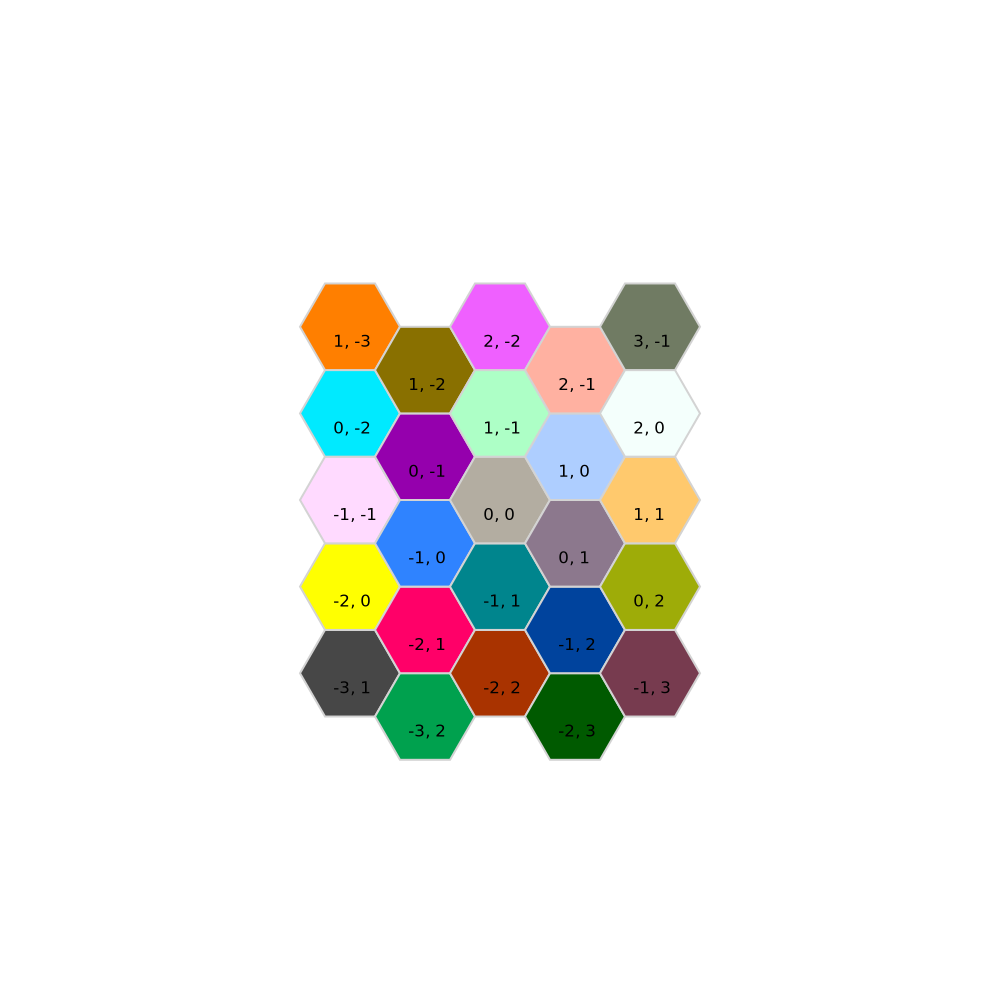
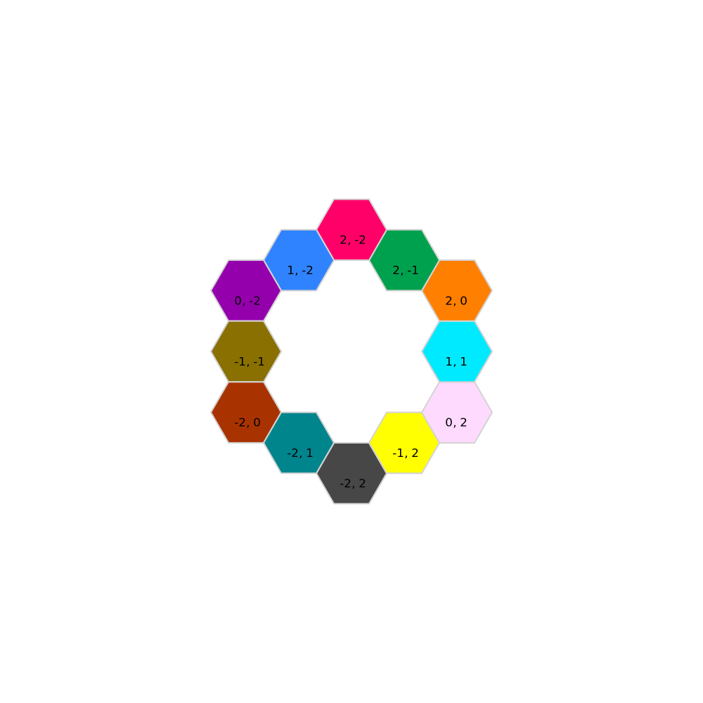
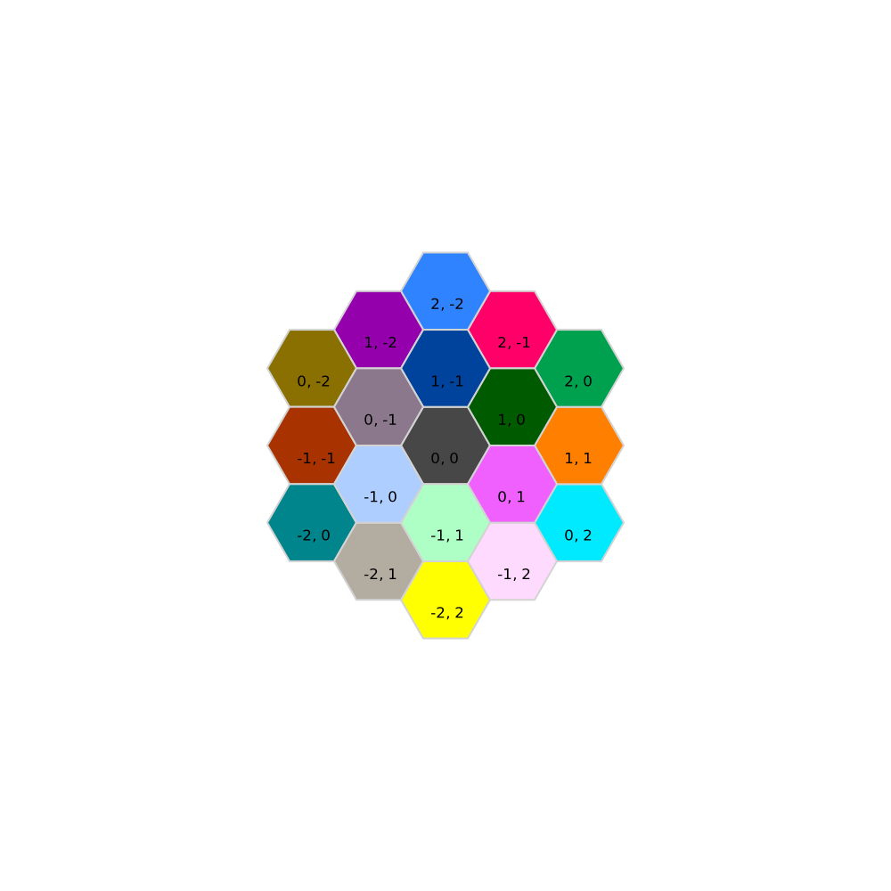

Introduction
The Repeat module contains functions for creating regular repeated patterns. This could be pixels in a display grid, or mirrors in an active optics telescope. Repeated patterns are defined by creating an object that inherits from the abstract type OpticSimRepeatingStructures.AbstractBasis.
Subtypes supporting the AbstractBasis interface should implement these functions:
Returns the neighbors in ring n surrounding centerpoint, excluding centerpoint
neighbors(::Type{B},centerpoint::Tuple{T,T},neighborhoodsize::Int) where{T<:Real,B<:AbstractBasis}Returns the lattice basis vectors that define the lattice
basismatrix(a::S) where{S<:AbstractBasis}Returns the vertices of the unit polygon for the basis that tiles the plane
tilevertices(a::S) where{S<:AbstractBasis}A lattice is described by a set of lattice vectors eᵢ which are stored in a OpticSimRepeatingStructures.AbstractBasis object. You can create bases in any dimension. Points in the lattice are indexed by integer coordinates. These lattice coordinates can be converted to Cartesian coordinates by indexing the LatticeBasis object.
using OpticSimRepeatingStructures
a = LatticeBasis((1.0,5.0),(0.0,1.0))
a[3,3]2-element StaticArraysCore.SVector{2, Float64} with indices SOneTo(2):
3.0
18.0The Lattice points are defined by a weighted sum of the basis vectors:
latticepoint = ∑αᵢ*eᵢwhere the αᵢ are integer weights.
The HexBasis1 constructor defines a symmetric basis for hexagonal lattices
using OpticSimRepeatingStructures
basismatrix(HexBasis1())2×2 StaticArraysCore.SMatrix{2, 2, Float64, 4} with indices SOneTo(2)×SOneTo(2):
1.5 1.5
0.866025 -0.866025The rectangularlattice function creates a rectangular lattice basis.
There are a few visualization functions for special 2D lattices. drawcells draws a set of hexagonal cells. Using hexcellsinbox we can draw all the hexagonal cells that fit in a rectangular box:
using OpticSimRepeatingStructures
drawcells(HexBasis1(),50,hexcellsinbox(2,2))
There is also a function to compute the n rings of a cell x, i.e., the cells which can be reached by taking no more than n steps along the lattice from x:
using OpticSimRepeatingStructures
drawcells(HexBasis1(),50,neighbors(HexBasis1,(0,0),2))
You can also draw all the cells contained within an n ring:
using OpticSimRepeatingStructures
drawcells(HexBasis1(),50,region(HexBasis1,(0,0),2))
Reference
Base.getindex — Methodreturns the positions of every element in a cluster given the cluster indices
Base.size — MethodCan access any point in a lattice so the range of indices is unlimited
Base.size — MethodCan access any cluster in a cluster lattice so the range of indices is unlimited
OpticSimRepeatingStructures.activebox — MethodCompute the bounding box in the display plane of the image of the worldpoly on the display plane. Pixels inside this area, conservatively, need to be turned on because some of their rays may pass through the worldpoly
OpticSimRepeatingStructures.anglesubdivisions — MethodThis code is tightly linked to the cluster sizes returned by choosecluster. This is not goood design to link these two functions. Think about how to decouple these two functions. computes how the fov can be subdivided among lenslets based on cluster size. Assumes the horizontal size of the eyebox is larger than the vertical so the larger number of subdivisions will always be the first number in the returns Tuple.
OpticSimRepeatingStructures.basisnormalization — Methodcomputes the matrix that transforms the basis set into the canonical basic vectors, eᵢ
OpticSimRepeatingStructures.bbox — Methodcomputes bounding box of hex tiles arranged in an approximately rectangular layout, with 2numj+1 hexagons in a row, and 2numi+1 hexagons in a column
OpticSimRepeatingStructures.beamenergy — MethodReturns a number between 0 and 1 representing the ratio of the lens radiance to the pupil radiance. Assume lᵣ is the radiance transmitted through the lens from the display point. Some of this radiance, pᵣ, passes through the pupil. The beam energy is the ratio pᵣ/lᵣ. Returns beam energy and the centroid of the intersection polygon to simplify ray casting.
OpticSimRepeatingStructures.choosecluster — FunctionTries clusters of various sizes to choose the largest one which fits within the eye pupil. Larger clusters allow for greater reduction of the fov each lenslet must cover so it returns the largest feasible cluster
OpticSimRepeatingStructures.choosecluster — MethodComputes the largest feasible cluster size meeting constraints
OpticSimRepeatingStructures.closestpackingdistance — MethodSpacing between lenslets which guarantees that for any pixel visible in all lenslets every point on the eyebox plane is covered. This is closest packing of circles.
OpticSimRepeatingStructures.cluster_coordinates_from_tile_coordinates — MethodGiven the (i,j) coordinates of a tile defined in the the underlying lattice basis of elements of the cluster compute the coordinates (cᵢ,cⱼ) of the cluster containing the tile, and the tile number of the tile in that cluster
OpticSimRepeatingStructures.clustercoordinates — Methodreturns the lattice indices of the elements in the cluster. These are generally not the positions of the elements
OpticSimRepeatingStructures.columncentroid — Methodcompute the mean of the columns of a. If a is an SMatrix this is very fast and will not allocate.
OpticSimRepeatingStructures.compute_focal_length — Methodcompute focal length given maximum display size, fov, etc.
OpticSimRepeatingStructures.compute_focal_length — Methodcompute focal length required for a given pixel pitch and angular size of the pixel
OpticSimRepeatingStructures.compute_lenslet_eyebox_data — Methodgiven the eye box polygon and how it is to be subdivided computes the subdivided eyeboxes and centroids
OpticSimRepeatingStructures.compute_optical_center — MethodComputes the location of the optical center of the lens that will project the centroid of the display to the centroid of the eyebox. Normally the display centroid will be aligned with the geometric centroid of the lens, rather than the optical center of the lens.
OpticSimRepeatingStructures.diameter_for_cycles_deg — Methodcomputes the diameter of a diffraction limited lens that has response mtf at frequency cyclesperdeg
OpticSimRepeatingStructures.diffractionfnumber — MethodThe f# required for the first zero of the airy diffraction disk to be at the next sample point
OpticSimRepeatingStructures.diffractionlimit — MethodReturns the diffraction limit frequency in cycles/deg. At this frequeny the response of the system is zero.
Derivation from the more common formula relating f number and diffraction limit.
focal length = 𝒇𝒍 diffraction cutoff frequency,fc, in cycles/mm = 1/λF# = diameter/λ𝒇𝒍 cutoff wavelength, Wc, = 1/cutoff frequency = λ𝒇𝒍/diameter
angular wavelength, θc, radians/cycle, corresponding to cutoff wavelength:
θ ≈ tanθ for small θ θc corresponding to Wc: θc ≈ tanθ = Wc/𝒇𝒍 Wc = θc*𝒇𝒍
from equation for Wc:
λ𝒇𝒍/diameter = Wc = θc𝒇𝒍 θc = λ/diameter cycles/rad = 1/θc = diameter/λ
OpticSimRepeatingStructures.display_plane — Methodreturns display plane represented in world coordinates, and the center point of the display
OpticSimRepeatingStructures.displaysize_ppdvspupildiameter — Methodgenerates a contour plot of lenslet display size as a function of ppd and pupil diameter
OpticSimRepeatingStructures.draw — Methoddraw the ClusterWithProperties at coordinates specified by latticecoordinateoffset
OpticSimRepeatingStructures.draw_eyebox_assignment — Functionassigns each lenslet/display subsystem a rectangular sub part of the eyebox
OpticSimRepeatingStructures.draw_subdivided_eyeboxes — Functiondraw subdivided eyeboxes to make sure they are in the right place
OpticSimRepeatingStructures.drawcells — MethodDraws a list of hexagonal cells, represented by their lattice coordinates, which are represented as a 2D matrix, with each column being one lattice coordinate.
OpticSimRepeatingStructures.drawcells — Methoddraws cells in a cluster
OpticSimRepeatingStructures.drawcells — Methoddraws cells in a cluster
OpticSimRepeatingStructures.drawspherelenslets — MethodComputes the lenslets on the display sphere and draws them.
OpticSimRepeatingStructures.euclideandiameter — MethodLattic bases can have real basis vectors. This returns the maximum Euclidean distance between lattice basis center points.
OpticSimRepeatingStructures.euclideandiameter — Methodreturns the euclidean distance between lattice clusters (norm of the longest lattice basis vector). The companion function latticediameter returns the distance in lattice space which does not take into account the size the element basis underlying the cluster.
OpticSimRepeatingStructures.euclideandiameter — MethodThis function returns the radius of the longest basis vector of the lattice cluster. Most lattices defined in this project have symmetric basis vectors so the radii of all basis vectors will be identical. This function is used in determing which clusters "fit" within the eye pupil.
OpticSimRepeatingStructures.extend — Methodrepeat vec1 enough times to fill a vector of length(vec2).
OpticSimRepeatingStructures.eyebox_number — MethodFor RGB clusters have to extract the indices of the color tiles and distribute the eyeboxes separately among RGB.
Example:
Assume there are 4 eyeboxes. The red,green, and blue tiles should each have the 4 eyebox numbers distributed evenly among them.
julia> hex12RGB() ClusterWithProperties{12, 2, Float64, OpticSim.RGBCluster}(LatticeCluster{12, 2, Float64, LatticeBasis{2, Int64}, HexBasis3{2, Float64}}(LatticeBasis{2, Int64}([2 -3; 2 2]), HexBasis3{2, Float64}(1.0), [(-1, 1), (0, 1), (-1, 0), (0, 0), (1, 0), (-1, -1), (0, -1), (1, -1), (2, -1), (0, -2), (1, -2), (2, -2)]), 12×2 DataFrame Row │ Color Name │ String String ─────┼──────────────── 1 │ green G1 2 │ blue B1 3 │ blue B1 4 │ red R2 5 │ green G2 6 │ red R2 7 │ green G3 8 │ blue B3 9 │ red R3 10 │ blue B4 11 │ red R4 12 │ green G4)
julia> rgbtileindices(ans) ([4, 6, 9, 11], [1, 5, 7, 12], [2, 3, 8, 10])
Assume eyeboxnumber is called with tilecoords that correspond to tileindex 9. The red tiles have indices [4, 6, 9, 11]. 9 is the third element in this vector so it should get eyebox number 3. If tile_index is 2 then this is a blue tile. The index of the element 2 in the blue vector is 1 so this tile should get eyebox 1.
OpticSimRepeatingStructures.eyebox_number — MethodAssigns an eyebox to each lenslet in the cluster
OpticSimRepeatingStructures.eyeboxangles — Methodangular size of the eyebox when viewed from distance eyerelief
OpticSimRepeatingStructures.eyeboxbounds — Methodprojects points on the sphere onto the eyebox along the -z axis direction.
OpticSimRepeatingStructures.eyeboxpolygon — Methodeyebox rectangle represented as a 3x4 SMatrix with x,y,z coordinates in rows 1,2,3 respectively. By default the eyebox z is 0.0
OpticSimRepeatingStructures.globalcoordinates — MethodMaps a pixel position from an emitter in a unit cell into a globally consistent angular coordinate frame with coordinates (θ,ϕ). This allows the contributions from multiple cells to be summed correctly.
OpticSimRepeatingStructures.hexcellsinbox — Methodcomputes the basis coordinates of hexagonal cells defined in the Hex1Basis in a rectangular pattern 2numi+1 by 2numj+1 wide and high respectively.
OpticSimRepeatingStructures.hexn — Methodfunction for creating symmetric clusters consisting of all lattice cells within regionsize of the origin. This includes hex1 (use regionsize = 0),hex7 (regionsize = 1),hex19 (region size = 2),hex37 (regionsize = 3), etc.
OpticSimRepeatingStructures.latticebox — Methodcompute a conservative range of lattice indices that might intersect containingshape
OpticSimRepeatingStructures.latticediameter — MethodLattice clusters have integer basis vectors. These represent the lattice in unit steps of the underlying element basis, not the Euclidean distance between lattice cluster centers. For example, the lattice cluster basis vectors for a hex3 lattice are (-1,2),(2,-1), where the units of the basis vectors represent steps in the underlying element basis. To get a Euclidean distance measure between cluster centers you need to multiply by the size of the element basis diameter. In the case of lenslet layout you need to multiply the cluster diameter by the lenslet diameter.
OpticSimRepeatingStructures.latticepoint — MethodOnly will work properly if lattice basis matrix contains only integer or rational terms. Returns the integer lattice coords of point in the given basis if the point is in the span of latticebasis. Otherwise returns nothing
OpticSimRepeatingStructures.maxlensletdisplaysize — Methodmaximum allowable display for visibility reasons
OpticSimRepeatingStructures.minimum_lenslet_diameter — Methodminimum lenslet diameter given ppd, fov, and pixel_pitch assuming a Bayer pattern 2x2 pixel. pixel_pitch is the distance between individual pixels. The pitch for the Bayer pattern is 2*pixel_pitch`.
OpticSimRepeatingStructures.mtfcircular — Methoddiffraction limited response for a circular aperture, normalized by maximum cutoff frequency
OpticSimRepeatingStructures.neighbors — MethodReturns all hex cells contained in the ring of size n centered around centerpoint. Use region if you want all the cells contained in the ring of size n.
OpticSimRepeatingStructures.nominal_system_inputs — MethodTypical properties for near eye VR display
OpticSimRepeatingStructures.normalizedshape — Methodwarp the matrix into a coordinate frame where the basis vectors are canonical, eᵢ
OpticSimRepeatingStructures.numberoflenslets — MethodComputes the number of lenslets required to create a specified field of view at the given eyerelief
OpticSimRepeatingStructures.pixelredundancy — MethodMultilens displays tradeoff pixel redundancy for a reduction in total track of the display, by using many short focal length lenses to cover the eyebox. This function computes the ratio of pixels in the multilens display vs. a conventional display of the same nominal resolution
OpticSimRepeatingStructures.planarpoly — Methodprojects convex polygon, represented by vertices, onto surface along vector normal. Assumes original polygon is convex and that the projection will be convex. No guarantee that this will be true but for smoothly curved surfaces that are not varying too quickly relative to the size of the polygon it should be true.
OpticSimRepeatingStructures.plotall — Functionto see what the objects look like in the warped coordinate frame use inv(basismatrix(lattice)) as the transform
OpticSimRepeatingStructures.pointcolor — MethodFor lenslets arranged in a hexagonal pattern cross talk between lenslets can be reduced by arranging the color of the lenslets so that each lenslet is surrounded only by lenslets of a different color. This function computes the color to assign to any lattice point to ensure this property holds.
OpticSimRepeatingStructures.printsystemproperties — Methodprints system properties nicely
OpticSimRepeatingStructures.project — MethodProjects vertexpoints in world space onto the lens plane and converts them to two dimensional points represented in the local x,y coordinates of the lens coordinate frame. Used for projecting eye pupil onto lens plane.
OpticSimRepeatingStructures.project — Methodproject the vertices of a polygon represented by vertices onto surface using the point as the origin and projectionvector as the projection direction. Return nothing if any of the projected points do not intersect the surface. The projected vertices are not guaranteed to be coplanar.
OpticSimRepeatingStructures.projectonbestfitplane — MethodFinds the best fit plane to vertices then projects vertices onto this plane by transforming from the global to the local coordinate frame. The projected points are represented in the local coordinate frame of the plane.
OpticSimRepeatingStructures.rectangularlattice — MethodCreates a rectangular lattice
OpticSimRepeatingStructures.region — MethodReturns centerpoint plus all its neighbors in a ring of size n. This is a hexagonal region of the lattice n times as large as the unit hexagon cell.
Example:
@wrapluxor drawhexcells(50, hexregion((0,0),2))OpticSimRepeatingStructures.replace_optical_center — MethodParaxial lenses are created with a local transform of identity. This is confusing because the lens has a local transform and the shape in the lens has a local transform.
OpticSimRepeatingStructures.rgbtileindices — Methodreturn 3 Vectors, call them r,g,b. The r tuple contains the indices of all tiles colored red, g contains those colored green, etc. Not efficient but shouldn't be in a critical inner loop.
OpticSimRepeatingStructures.ringoffsets — Methodreturns (i,j) offsets of ring n defined in the HexBasis1 lattice basis.
OpticSimRepeatingStructures.setup_coordinate_frames — MethodCoordinate frames for the eye/display system. The origin of this frame is at the geometric center of the eyeball. Positive Z axis is assumed to be the forward direction, the default direction of the eye's optical axis when looking directly ahead.
OpticSimRepeatingStructures.setup_nominal_system — MethodExample that shows how to call setup_system with typical values
OpticSimRepeatingStructures.setup_system — MethodCreate lenslet system that will cover the eyebox and fov. If the numbers in the fov tuple do not have units the system assumes they represent an angle in radians. Is is better to use unitful angles though, either rad or °:
setup_system(eye_box,(1rad,1.2rad),...)
setup_system(eye_box,(1°,1.2°),...)If you do this
setup_system(eye_box,(1,1.2),...)the system will assume the angle is in radians.
OpticSimRepeatingStructures.sizeofdisplay — MethodThis computes the approximate size of the entire display, not the individual lenslet displays.
OpticSimRepeatingStructures.smallsystemparameters — MethodSystem parameters which will yield fewer lenslets which will draw much faster
OpticSimRepeatingStructures.spherepoints — Methodgiven a total fov in θ and ϕ compute sample points on the edges of the spherical rectangle.
OpticSimRepeatingStructures.spherepoints — MethodComputes points on the edges of the spherical rectangle defined by the range of θ,ϕ. This is used to determine lattice boundaries on the eyebox surface.
OpticSimRepeatingStructures.spherepolygons — MethodGenerate hexagonal polygons on a spherical display surface.
Each hexagonal polygon corresponds to one lenslet. A hexagonal lattice is first generated in the eyebox plane and then the vertices of these hexagonal tiles are projected onto the spherical display surface. The projected points are not necessarily planar so they are projected onto a best fit plane. For systems with fields of view less that 90° the error is small.
dir is the 3d direction vector to project points from the eyebox plane to the spherical display surface.
radius is the radius of the spherical display surface.
fovθ,fovϕ correspond to the field of view of the display as seen from the center of the eyebox plane.
lattice is the hexagonal lattice to tile the sphere with, HexBasis1 or HexBasis3, which are rotated versions of each other.
OpticSimRepeatingStructures.subdivide — Methodpoly is a two dimensional rectangle represented as a 3x4 SMatrix with x values in row 1 and y values in row 2. Returns a vector of length xsubdivisions*ysubdivisions containing all the subdivided rectangles.
OpticSimRepeatingStructures.system_properties — MethodCompute high level properties of a lenslet display system. Uses basic geometric and optical constraints to compute approximate values which should be within 10% or so of a real physical system.
eyerelief is in mm: 18mm not 18.
eyebox is a 2 tuple of lengths, also in mm, that specifies the size of the rectangular eyebox, assumed to lie on vertex of the cornea when the eye is looking directly forward.
fov is the field of view of the display as seen by the eye, in degrees (no unit type necessary here).
pupildiameter is the diameter of the eye pupil in mm.
mtf is the MTF response of the system at the angular frequency cyclesperdegree.
pixelsperdegree is the number of pixels per degree on the display, as seen by the eye through the lenslets. This is not a specification of the optical resolution of the system (use mtf and cyclesperdegree for that). It is a physical characteristic of the display.
Example:
julia> system_properties(18mm,(10mm,9mm),(55°,45°),4.0mm,.2,11.0)
Dict{Symbol, Any} with 14 entries:
:lenslet_diameter => 0.742781 mm
:lenslet_display_size => (251.708 μm, 345.939 μm)
:fnumber => 2.0
:number_lenslets => 644.903
:total_silicon_area => 56.1555 mm^2
:subdivisions => (3, 2)
:pixel_redundancy => 33.5192
:diffraction_limit => 24.4603
:eyebox_angles => (29.0546, 26.5651)
:pixels_per_degree => 28.8088
:lenslet_fov => (9.68487, 13.2825)
:display_size => (18.7404 mm, 14.9117 mm)
:cluster_data => (cluster = ClusterWithProperties{19, 2, Float64}(Lat…
:focal_length => 1.48556 mm
OpticSimRepeatingStructures.systemparameters — MethodSystem parameters for a typical HMD.
OpticSimRepeatingStructures.systemproperties_call — MethodExample call of system_properties function
OpticSimRepeatingStructures.test_paraxial_convex_poly — Methodverify that paraxial lens properly transforms rays into local coordinate frame to compute intersections with convex poly shape
OpticSimRepeatingStructures.test_ray_cast_from_display_center — FunctionFor each display computes a ray from the display center to the geometric center of the lenslet. Then it computes the refracted ray and intersects it with the subdivided eyebox associated with the display. Draws all these rays. The rays from the displays should hit the center points of the subdivided eyeboxes
OpticSimRepeatingStructures.test_replace_optical_center — Methodrefracts the ray from the center of the display passing through the geometric center of the lens and then computes the closes point on this ray to the eyeboxcentroid. If the lens optical center has been calculated correctly the ray should pass through the eyeboxcentroid
OpticSimRepeatingStructures.testspherelenslets — Methodreturns hexagonal lenslets on the display sphere
OpticSimRepeatingStructures.testspherepolygons — Methodreturns the hex polygons on the sphere that will eventually be turned into hexagonal lenslets
OpticSimRepeatingStructures.tilecoordinates — Methodreturns the integer coordinates of the tile at tileindex in the cluster at for a cluster with location cᵢ,cⱼ
OpticSimRepeatingStructures.tilesinside — MethodThe vertices of the containing shape are the columns of the matrix containingshape
OpticSimRepeatingStructures.tilesinside — MethodReturns the lattice coordinates of all tiles that lie at least partly inside containingshape.
Compute the lattice tiles with non-zero intersection with containingshape. First compute a transformation that maps the lattice basis vectors to canonical unit basis vectors eᵢ (this is the inverse of the lattice basis matrix). Then transform containingshape into this coordinate frame and compute a bounding box. Unit steps along the coordinate axes in this space represent unit lattice steps in the original space. This makes it simple to determine coordinate bounds in the original space. Then test for intersection in the original space.
OpticSimRepeatingStructures.tilevertices — Methodcomputes the tile vertices at the offset lattice coordinate.
OpticSimRepeatingStructures.tilevertices — MethodReturns the vertices of the unit tile polygon for the basis
OpticSimRepeatingStructures.tilevertices — MethodReturns the vertices of the unit tile polygon for the basis
OpticSimRepeatingStructures.ρatairyvalue — Methodreturns ρ, the normalized distance, at which the airy disk will have the value airyvalue
OpticSimRepeatingStructures.AbstractBasis — TypeBase class for defining points on a lattice. Lattice points are defined by basis vectors eᵢ and lattice indices indexᵢ:
point = Σᵢ indexᵢ*eᵢ
Example: define a 2D basis.
julia> a = LatticeBasis([1,2],[3,4])
LatticeBasis{2, Int64}(SVector{2, Int64}[[1, 2], [3, 4]])Array indexing is used to generate a lattice point: a[1,2] = 1[1,2] + 2[3,4]
julia> a[1,2]
2-element SVector{2, Int64} with indices SOneTo(2):
7
10Subtypes supporting the AbstractBasis interface should implement these functions:
Returns the neighbors in ring n surrounding centerpoint, excluding centerpoint
neighbors(::Type{B},centerpoint::Tuple{T,T},neighborhoodsize::Int) where{T<:Real,B<:AbstractBasis}Returns the lattice basis vectors that define the lattice
basis(a::S) where{S<:AbstractBasis}Returns the vertices of the unit polygon that tiles the plane for the basis
tilevertices(a::S) where{S<:AbstractBasis}OpticSimRepeatingStructures.AbstractLatticeCluster — TypeA Cluster is a repeating pattern of indices defined in a lattice called the element lattice. The cluster of elements has its own lattice, which by definition is different from the element lattice unless each cluster consists of a single element. A LatticeCluster subtype must implement these methods:
clusterbasis(a::AbstractLatticeCluster) returns the AbstractBasis object for the cluster. This is not generally the same as the basis for the underlying lattice.
elementbasis(a::AbstractLatticeCluster) returns the AbstractBasis object the underlying lattice of the cluster.
clusterelements(a::AbstractLatticeCluster) returns the lattice indices, represented in the underlying lattice basis, for each of the elements in a unit cluster cell.
clustersize(a::AbstractLatticeCluster) returns the number of elements in a unit cluster cell.
For example this defines a Cluster of three hexagonal elements:
julia> function hex3cluster()
clusterelts = SVector((0,0),(-1,0),(-1,1))
eltlattice = HexBasis1()
clusterbasis = LatticeBasis(( -1,2),(2,-1))
return LatticeCluster(clusterbasis,eltlattice,clusterelts)
end
julia> lattice = hex3cluster()
LatticeCluster{3, 2, Float64, LatticeBasis{2, Int64}, HexBasis1{2, Float64}}(LatticeBasis{2, Int64}([-1 2; 2 -1]), HexBasis1{2, Float64}(), [(0, 0), (-1, 0), (-1, 1)])
julia> lattice[1,1] #returns the locations of the 3 elements in the cluster at the cluster offset of 1,1
2×3 SMatrix{2, 3, Float64, 6} with indices SOneTo(2)×SOneTo(3):
1.0 -0.5 1.0
1.0 0.133975 -0.732051
OpticSimRepeatingStructures.ClusterWithProperties — TypeMay want to have many properties associated with the elements in a cluster, which is why properties is represented as a DataFrames.DataFrame. The DataFrame in the properties field should have as many rows as there are elements in a cluster. At a minimum it must have a :Color and a :Name column.
Clusters can be type tagged as being either MonochromeCluster or RGBCluster. If you are using the lenslet assignment functions in Multilens then you should explicitly include an RGB type if the cluster has RGB lenslets.
Example: a lattice cluster of three hexagonal elements, labeled R,G,B with colors red,green,blue.
function hex3RGB()
clusterelements = SVector((0,0),(-1,0),(-1,1)) #lattice indices of cluster elements represent in the element lattice basis
colors = [colorant"red",colorant"green",colorant"blue"]
names = ["R","G","B"]
eltlattice = HexBasis1()
clusterbasis = LatticeBasis(( -1,2),(2,-1)) #lattice indices, in the element lattice basis, representing the repeating pattern of the cluster
lattice = LatticeCluster(clusterbasis,eltlattice,clusterelements)
properties = DataFrame(Color = colors, Name = names)
return ClusterWithProperties{RGBCluster}(lattice,properties) #NOTE: this is an RGB cluster so it has been explicitly tagged with an RGBCluster type.
endOpticSimRepeatingStructures.HexBasis1 — Typescale will scale the canonical basis vectors of this hexagonal tiling
OpticSimRepeatingStructures.HexBasis3 — Typescale will scale the canonical basis vectors of this hexagonal tiling
OpticSimRepeatingStructures.LatticeCluster — TypeBasic lattic cluster type. N1 is the number of tiles in the cluster, N is the dimension.
OpticSimRepeatingStructures.LensletSystem — TypeContains the information defining a lenslet array.
OpticSimRepeatingStructures.RepeatingStructure — Typecoordinateframe is a coordinate frame defined at a point in the repeating structure which all other positions will be measured with respect to. Used to define a globally consistent coordinate frame that pixels in each unit call map to.
OpticSimRepeatingStructures.hexcoords — Constantcoordinates of a unit hexagon tile polygon with unit length sides centered about the point (0,0)
OpticSimRepeatingStructures.hexcycle — Constant(i,j) offsets of a ring represented in the HexBasis1 lattice basis. The hexagonal grid is assumed to start from the bottom center hex cell. To generate larger rings repeat this pattern ring 1 = (1, 0) (1, -1) (0, -1) (-1, 0) (-1, 1) (0, 1) ring 2 = (1, 0)(1, 0)(1, -1)(1, -1)(0, -1)(0, -1)(-1, 0)(-1, 0)(-1, 1)(-1, 1)(0, 1)(0, 1)
OpticSimRepeatingStructures.@unzip — Macro@unzip xs, ys, ... = uswill expand the assignment into the following code xs, ys, ... = map(x -> x[1], us), map(x -> x[2], us), ...